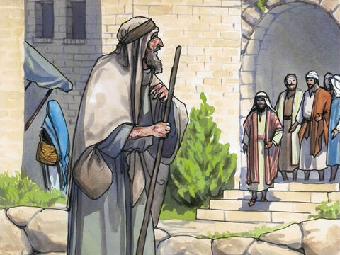
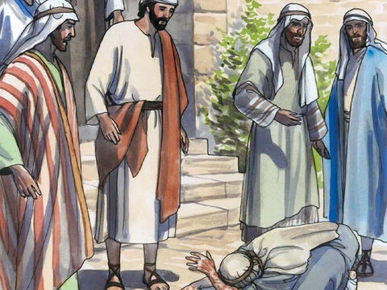
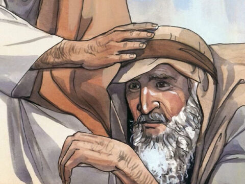
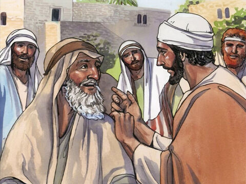
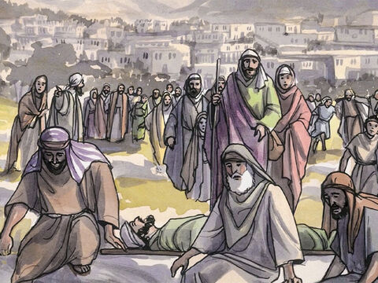
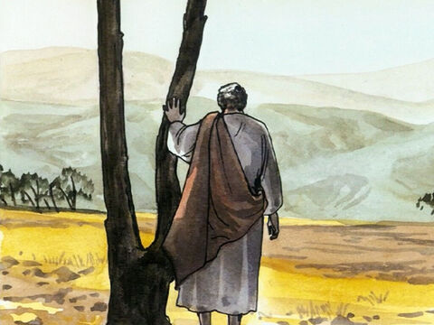

Lord Jesus Heals The Man With Leprosy
And it came to pass, when he was in a certain city, behold a man full of leprosy: who seeing Jesus fell on his face, and besought him, saying, Lord, if thou wilt, thou canst make me clean.
And he put forth his hand, and touched him, saying, I will: be thou clean. And immediately the leprosy departed from him.
And he charged him to tell no man: but go, and shew thyself to the priest, and offer for thy cleansing, according as Moses commanded, for a testimony unto them.
But so much the more went there a fame abroad of him: and great multitudes came together to hear, and to be healed by him of their infirmities.
And he withdrew himself into the wilderness, and prayed.
Luke 5:12-16
- 
- 
- 
- 
- 
- 